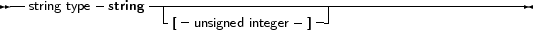

Free Pascal supports the String type as it is defined in Turbo Pascal: a sequence of characters with an optional size specification. It also supports ansistrings (with unlimited length) as in Delphi.
To declare a variable as a string, use the following type specification:
_________________________________________________________________________________________________________String Type

___________________________________________________________________
If there is a size specifier, then its maximum value - indicating the maximum size of the string - is 255.
The meaning of a string declaration statement without size indicator is interpreted differently depending on the {$H} switch. If no size indication is present, the above declaration can declare an ansistring or a short string.
Whatever the actual type, ansistrings and short strings can be used interchangeably. The compiler always takes care of the necessary type conversions. Note, however, that the result of an expression that contains ansistrings and short strings will always be an ansistring.